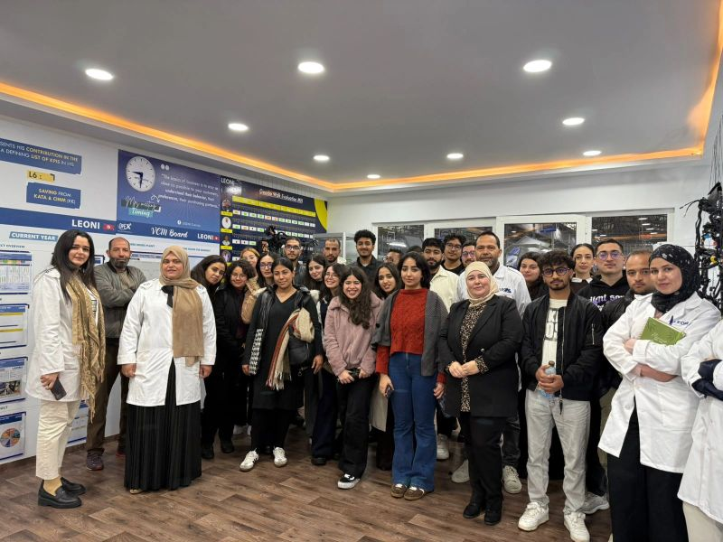
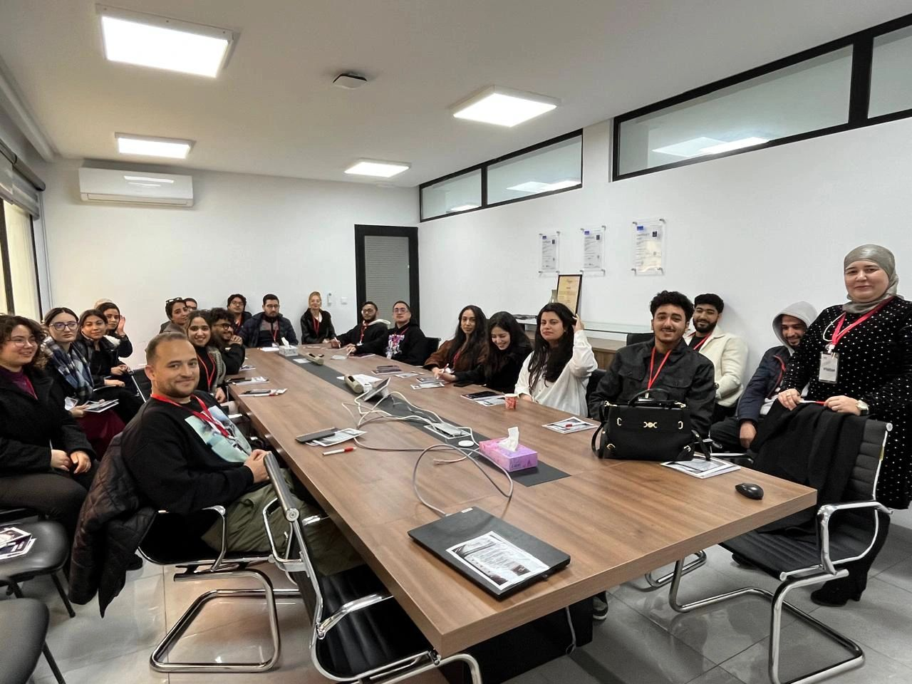
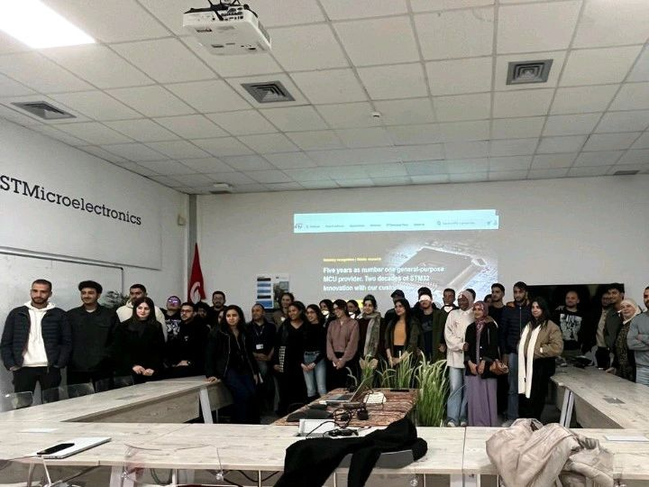

Portfolio
Electrical Engineer | Computer Vision & Industrial AI for Automation
Equipped with a dual competence in Industrial Automation and Edge AI, I engineer intelligent systems combining computer vision, PLCs, and heavy machinery—from hardware prototyping to real-time production deployment.
Retrofitted a large-format manual metal fabrication machine into an automated multi-axis CNC system. Integrated stepper motor drivers, wired electrical control cabinets, and configured Mach3.
📷 View project screenshotsAutomated a legacy manual marine basin control system. Programmed Siemens PLCs (Ladder Logic) and designed a SIMATIC TP700 SCADA interface in TIA Portal for real-time pump and valve orchestration.
📷 View project screenshotsEnd-to-end automated OCR pipeline deployed in production. Extracts key manufacturing data from production sheets using YOLO11, SVM classification, and DocTR, served via FastAPI.
📷 View project screenshotsReal-time computer vision system for garment measurement on production lines, achieving ±0.3cm precision. Features object detection, multi-camera calibration, and GPU-accelerated inference.
📷 View project screenshotsSTM32-controlled mobile robotics platform featuring Bluetooth/WiFi connectivity, PWM motor control, I2C/USART communication, real-time sensor acquisition, and IoT telemetry via Node-RED.
📷 View project screenshotsIndustrial workcell simulated in Factory I/O and programmed via TIA Portal. A 2-axis Pick & Place robotic arm sorts items by color, executes part stamping, and manages conveyor routing.
📷 View project screenshotsReal-time facial recognition pipeline utilizing InsightFace, achieving 95% accuracy. Integrated with SQL Server for data logging and fully containerized via Docker for edge deployment.
Virtual try-on platform integrating CatVTON (Stable Diffusion), Streamlit, and WebRTC. Utilizes YOLO11-Pose and ArUco marker calibration for centimeter-level spatial accuracy.
DeepLearning.AI · Issued: 03/2024
DeepLearning.AI · Issued: 06/2024
Stanford Online · Issued: 01/2024
University of California, Santa Cruz · Issued: 02/2025
Microsoft · Issued: 05/2024
Microsoft · Issued: 11/2024
6sigmastudy · Issued: 01/2025

Explored automated wiring harness production lines and gained insights into advanced industrial quality control and lean manufacturing processes.
📷 View full photo
Observed heavy machinery automation, cable manufacturing pipelines, and strict industrial safety standards on the factory floor.
📷 View full photo
Gained firsthand exposure to semiconductor manufacturing, edge computing hardware, and microelectronics production environments.
📷 View full photoActively participated in workshops and sessions covering Artificial Intelligence, Robotics, Cloud computing, and Agile methodologies. (Click to view certificate)
Download my complete CV to view my professional experience, skills, and academic background.
⬇️ Download CV (PDF)